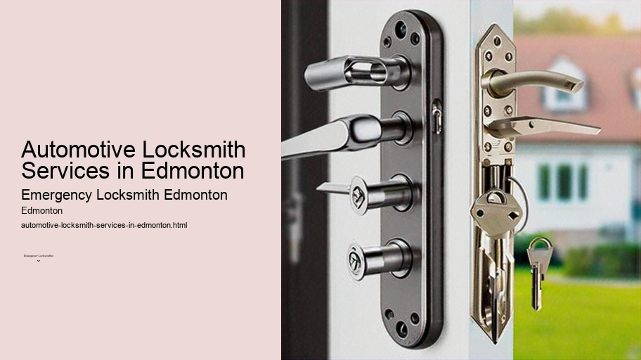

News
24/7 Emergency Locksmith Services
24/7 Emergency Locksmith Services
Emergency Locksmith Services
Residential lockout assistance
Automotive lockout services
Broken key extraction
Emergency lock repair and replacement
Commercial Locksmith Solutions in Edmonton
Commercial Locksmith Solutions in Edmonton
Highsecurity lock installations
Master key systems and rekeying services
Access control system integration
Panic bar installation and maintenance
Residential Locksmith Services in Edmonton
Residential Locksmith Services in Edmonton
Home lockout response
Rekeying existing locks for homes
Installation of new locks and deadbolts
Repairing or replacing residential locks
Automotive Locksmith Services in Edmonton
Automotive Locksmith Services in Edmonton
Car key duplication and replacement
Transponder key programming
Ignition repair and replacement services
Vehicle trunk opening
About Us

Automotive Locksmith Services in Edmonton
Locksmith for eviction service Edmonton
Automotive locksmith services in Edmonton encompass a wide range of solutions catered to the needs of vehicle owners who may face various issues with their car keys and locks.
Car key duplication and replacement
. These services are not only vital for addressing routine inconveniences but also play a crucial role in ensuring the security of one's vehicle.
When most people think about locksmiths, they typically imagine someone who deals with residential or commercial locks.
CCTV installation services Edmonton
Professional locksmith services Edmonton
Licensed locksmith Edmonton
However, automotive locksmiths specialize in vehicle lock systems and offer an array of services that extend beyond simply cutting new keys. In Edmonton, where the weather can be harsh and unpredictable, having reliable access to automotive locksmith services is particularly significant.
One of the primary services offered by automotive locksmiths is emergency lockout assistance.
Locksmith quotes Edmonton
Local locksmith services Edmonton
It can happen to anyone: you're running late, you're juggling too many things at once, and before you know it, your keys are locked inside your car.
Transponder key services Edmonton
This scenario can be stressful and even dangerous during Edmonton's frigid winters. Thankfully, automotive locksmiths provide quick and efficient lockout services to get you back into your car without causing damage to your vehicle.
Another common issue that drivers face is lost or broken keys.
Door lock installation Edmonton
Locksmith for eviction service Edmonton
Over time, car keys can wear down or snap off in ignition systems or door locks. Automotive locksmiths have the expertise to extract broken key pieces from locks safely and create a new key on the spot. Moreover, modern vehicles often come equipped with transponder chips embedded within their keys for added security measures; automotive locksmiths in Edmonton have the technology necessary to program these transponder chips correctly.
The advent of keyless entry systems has introduced new challenges and complexities when it comes to car locks and ignition issues.
Emergency locksmith Edmonton
Automotive locksmith technicians stay abreast of evolving technologies so they can handle smart key fob programming as well as repairs for remote entry devices.
Vehicle theft prevention is another critical aspect wherein automotive locksmith services prove invaluable. They offer high-security lock installation which includes advanced locking mechanisms designed to deter thieves effectively. With car theft being a concern for many residents, investing in upgraded locks offers peace of mind.
In addition to these essential services, automotive locksmiths also assist with ignition repair or replacement when drivers experience difficulty starting their cars due to faulty ignition cylinders—a common occurrence resulting from regular wear-and-tear or attempted theft.
For those looking into buying pre-owned vehicles in Edmonton, rekeying is an advisable step towards safeguarding against previous owners potentially retaining access to the vehicle; this service involves altering existing locks so that only new keys can operate them.
However skilled an individual might be at DIY projects around their home, tackling vehicular lock and key problems requires specialized knowledge and tools that only professional automotive locksmiths possess—making them indispensable resources for motorists in distress.
In conclusion, given how integral our vehicles are for day-to-day life—especially under harsh climatic conditions like those experienced in Edmonton—the scope of what automotive locksmith services offer cannot be overstated. From unlocking doors on icy mornings after accidental lockouts to installing sophisticated anti-theft mechanisms—automotive locksmith professionals stand ready around-the-clock as guardians ensuring our vehicular accessibility remains uncompromised.
Check our other pages :
Broken key extraction
Transponder key programming
Vehicle trunk opening
Rekeying existing locks for homes
Residential lockout assistance
Frequently Asked Questions
What types of emergency automotive locksmith services are available in Edmonton?
Emergency automotive locksmith services in Edmonton typically include car lockout assistance, key cutting and duplication, transponder key programming, ignition repair and replacement, and broken key extraction.
How quickly can an emergency automotive locksmith arrive in Edmonton?
Response times vary by provider, but most emergency automotive locksmiths in Edmonton aim to arrive within 30 minutes to an hour after being contacted.
Are emergency automotive locksmiths in Edmonton available 24/7?
Yes, many emergency automotive locksmith providers in Edmonton offer 24/7 service to assist with urgent situations at any time of the day or night.
Can an emergency locksmith create a new key for my vehicle on-site if Ive lost all my keys?
Most skilled automotive locksmiths can create a new key for your vehicle on-site using specialized tools and equipment. They can cut a new key and program it to your vehicles immobilizer system if necessary.
Will calling an emergency automotive locksmith damage my car?
A professional emergency automotive locksmith has the tools and expertise required to gain entry to your car or fix your locks without causing damage. It is important to choose a reputable service provider to ensure quality workmanship.